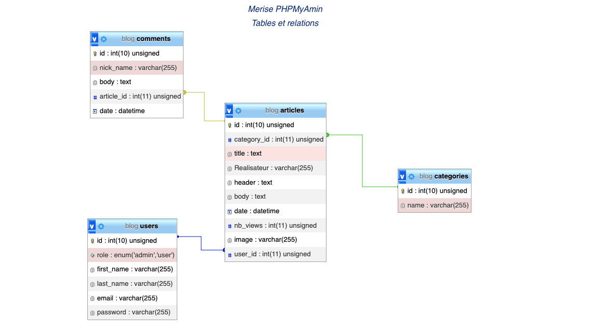
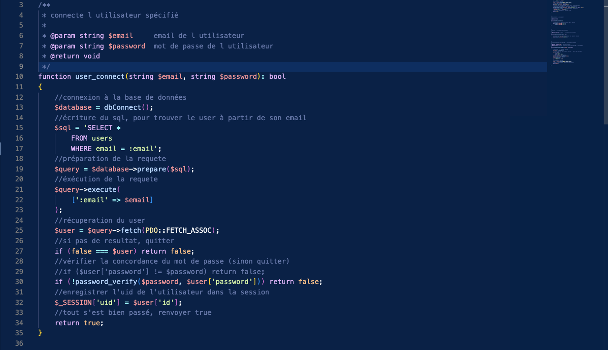

BLOG HORROR MOVIES
La conception
Pour mon blog j'ai commencé par créer un modèle conceptuel de données (MCD) à l'aide de la méthode Merise. Il a servi de référence pour définir les entités clés, leurs attributs et les relations entre elles.
J'ai exploité ChatGPT pour générer des données,puis j'ai employé MySQL pour établir la structure de la base de données.
Le développement
J'ai crée les modèles en PHP pour interagir avec la base de données, les contrôleurs assurant la gestion et la personnalisation des vues avec des templates phtml et un CSS personnalisé pour une interface attrayante et des menus déroulants pour une navigation fluide dans les différentes catégories du blog.
Pour ajouter une touche dynamique à l'interface, j'ai inclus un carrousel d'images.
Pour assurer la sécurité et la confidentialité des utilisateurs, j'ai mis en place un système d'authentification robuste avec le cryptage des mots de passe.
J'ai développé un tableau de bord complet avec des fonctionnalités CRUD (Create, Read, Update, Delete). Cela permet aux administrateurs d'ajouter de nouveaux articles, de les modifier ou de les supprimer directement à partir du back-office.